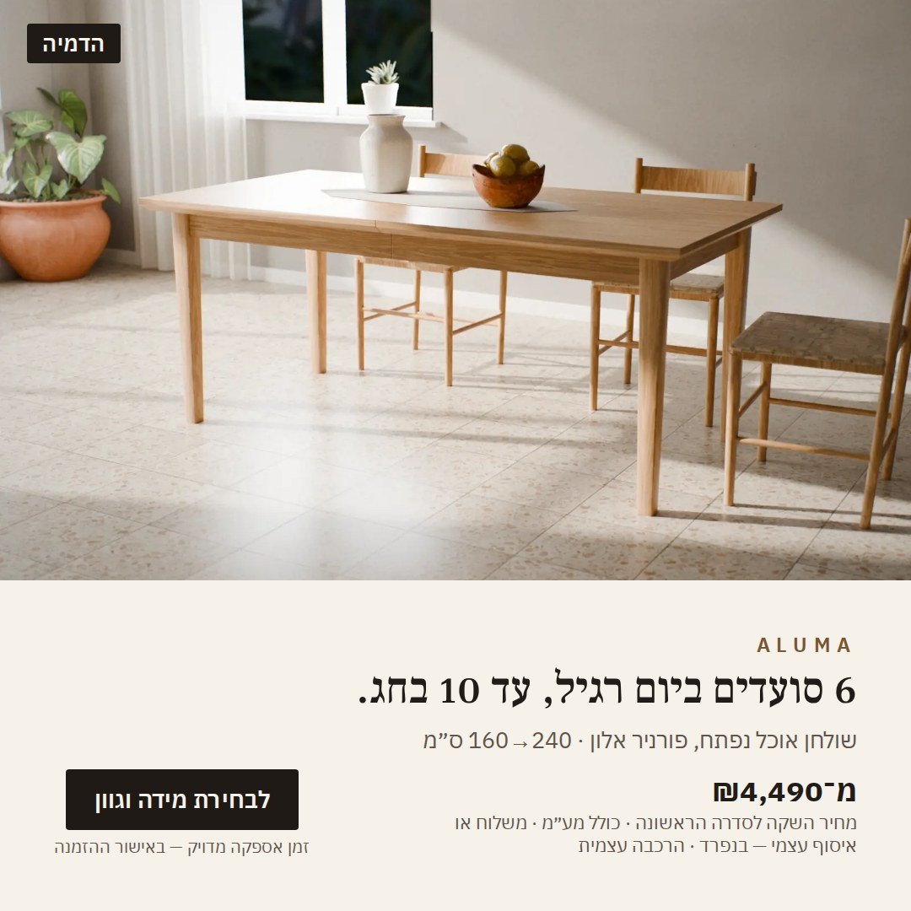
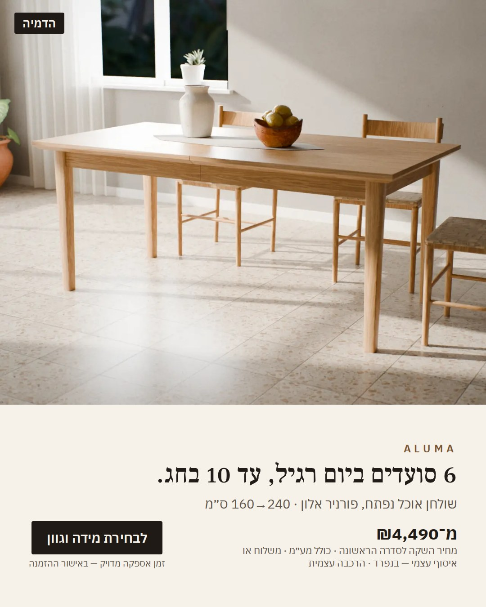
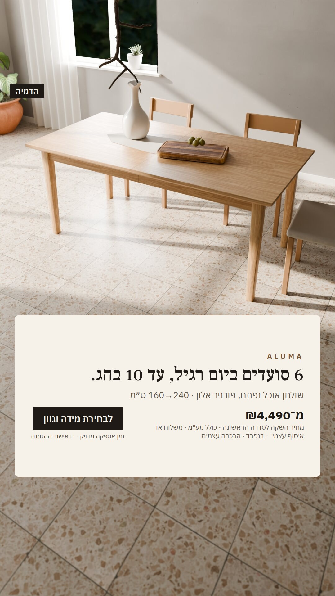
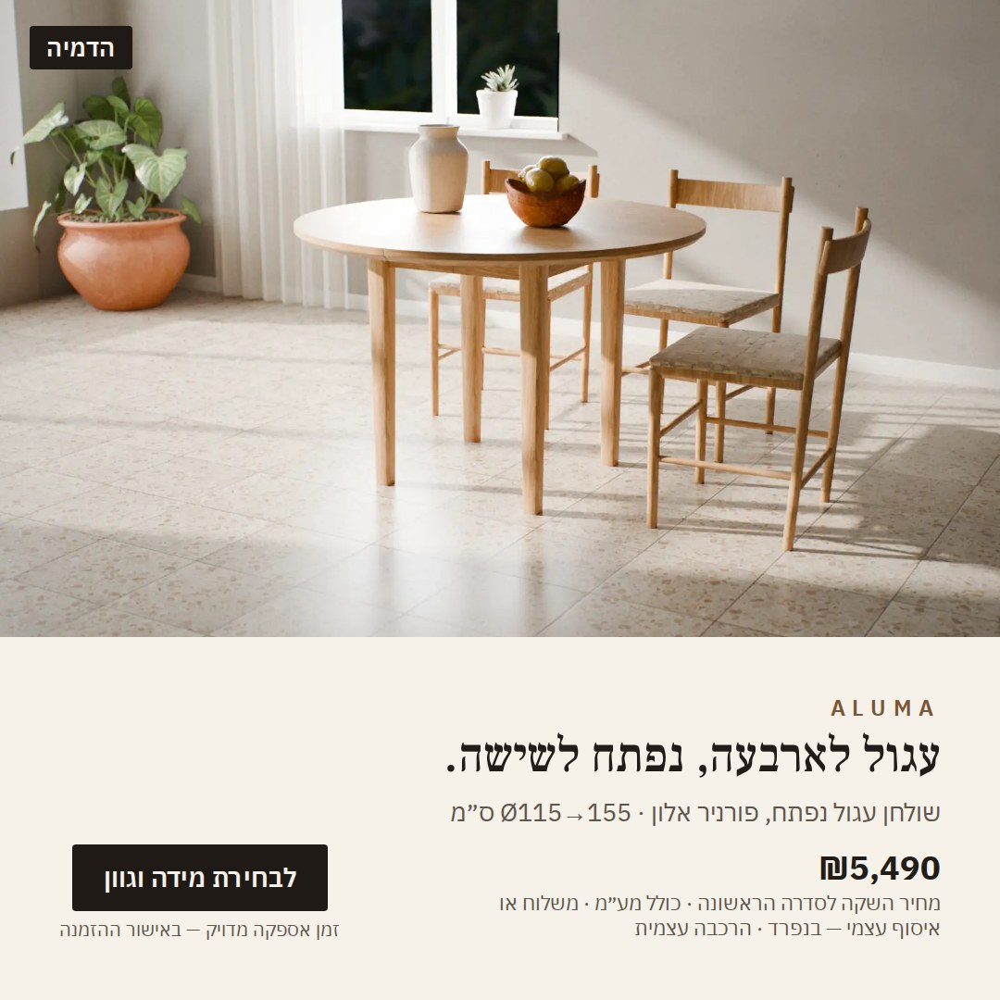
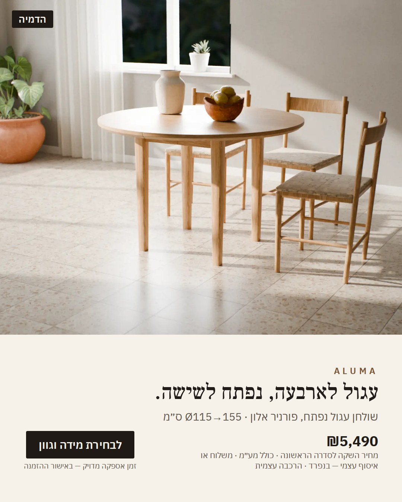
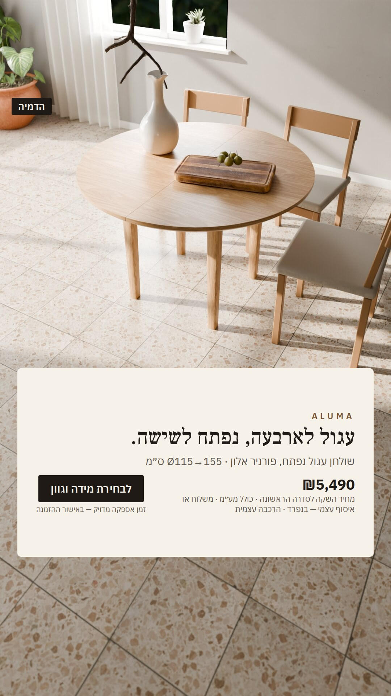
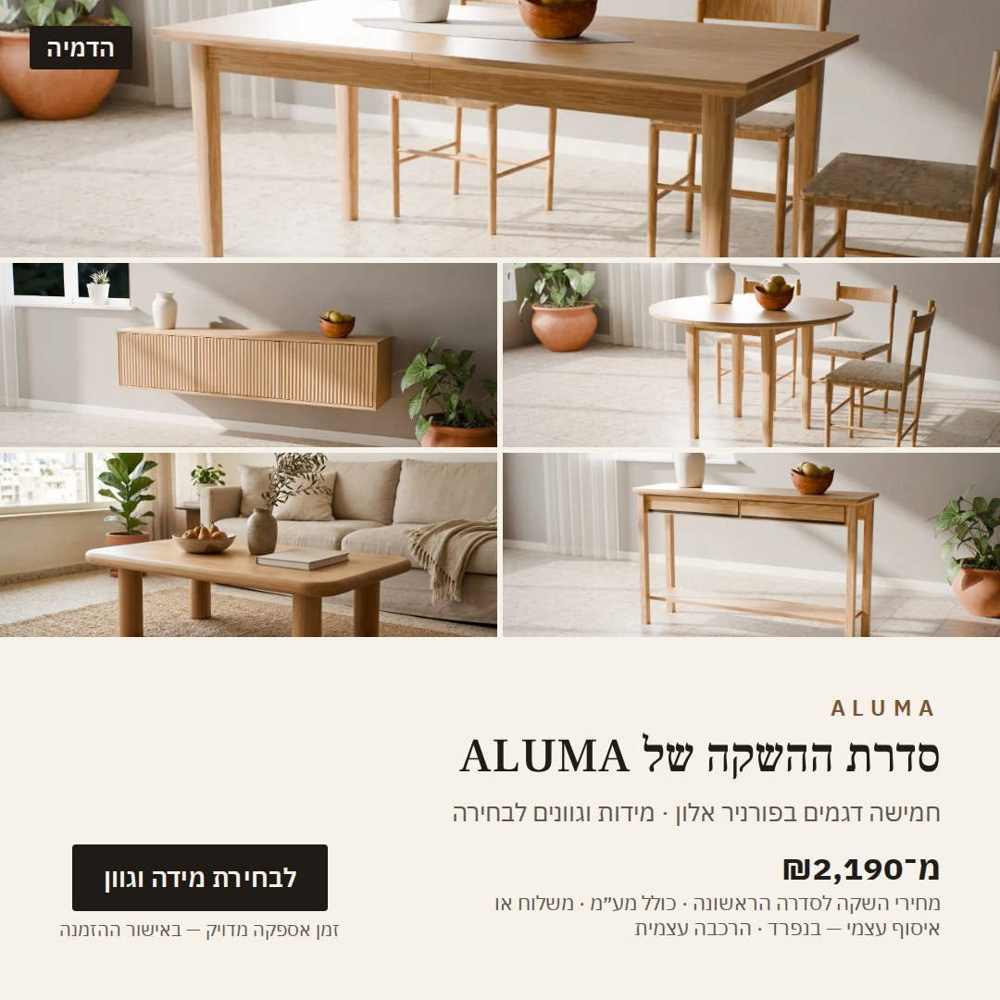
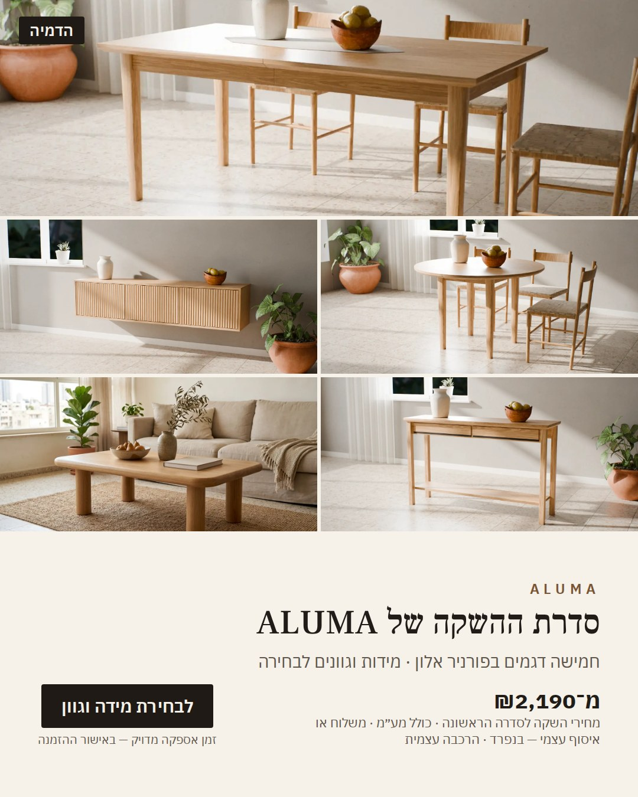
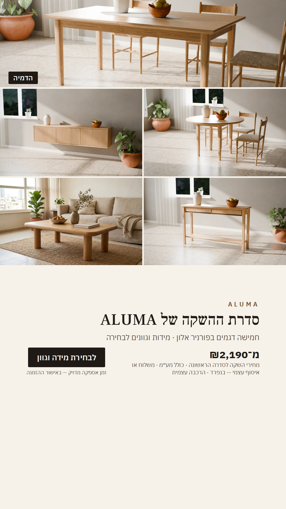

ALUMA — креативи для тесту Meta (візуалізації, «הדמיה»)
Згенеровано: node tools/creatives/build.js. Ціни — «מחיר השקה לסדרה הראשונה», з каталогу.
tavor

1080×1080 · 142 KB · текст 9.9 % · контраст ≥ 5.9
1080×1350 · 160 KB · текст 9.1 % · контраст ≥ 5.9
1080×1920 · 250 KB · текст 6.6 % · контраст ≥ 5.9sahar

1080×1080 · 146 KB · текст 9.5 % · контраст ≥ 5.9
1080×1350 · 167 KB · текст 8.7 % · контраст ≥ 5.9
1080×1920 · 263 KB · текст 6.3 % · контраст ≥ 5.9collection

1080×1080 · 180 KB · текст 9.2 % · контраст ≥ 5.9
1080×1350 · 219 KB · текст 8.3 % · контраст ≥ 5.9
1080×1920 · 240 KB · текст 6.0 % · контраст ≥ 5.9